Tianlong Wang
- Ph.D. Student in Data Science, University of Virginia
About
Tianlong Wang is a third-year Ph.D. student in the RISE Lab , School of Data Science, University of Virginia, advised by Prof. Sheng Li. His research focuses on video generation, world models, and spatial reasoning; current work studies memory for stateful video world models, interaction-aware representations, and physical contact in video generation.
Research
-
Native-Weight Test-Time Memory for Stateful Video World Models
Video world models must remember what they can no longer see. We store this memory in the model's own weights: two query heads in every attention layer serve as fast weights, written once per clean chunk by a block-diagonal delta rule with row-norm restoration, while all other weights stay fixed at inference. With no attention across chunks, the state can pass between chunks only through these weights; to our knowledge, this is the first video world model whose memory lives in its own attention projection weights rather than in an added memory module. We re-implemented the Shell Game hidden-state tracking benchmark from scratch (31K rendered cup-swap episodes, a 201M-parameter chunk-causal video DiT trained with diffusion forcing), where attention alone tracks the hidden ball within the 5-swap training horizon but falls to chance beyond it. With native-weight memory, the model reaches 0.98 accuracy at 30 swaps (6× the training horizon, two seeds), versus 0.69 reported for the benchmark paper's dedicated test-time-training branch (LaCT), with 1/24 of its fast-weight state and about 1/6 of its added parameters.
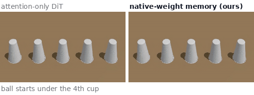
30 swaps, 6× the training horizon: the attention-only DiT loses the ball; native-weight memory still finds it. 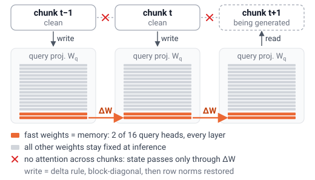
Test-time training on the model's own Wq only: 2 of 16 heads per layer are fast (4 block-diagonal blocks); the other 14 keep their slow weights as a fallback. -
Learning PCA-Discoverable Interaction Representations
Do video models represent interactions before they happen? We probe frozen Wan2.2-5B by noising real videos, hooking all 30 DiT blocks in a single forward pass, and analyzing token features with PCA and object-to-object attention, on CLEVRER collisions vs. near-misses and Something-Something V2 (SSv2) contact actions. While two objects approach each other, we observe no change that anticipates the interaction: an object about to be hit matches the static objects until contact, and its features change only after the collision. The leading principal components capture object segmentation and motion, but the interaction itself does not stand out in them: near-misses resemble collisions, objects in contact keep distinct features (a coin flicked by a finger stays grouped with the other coin, never with the hand), and attention between objects follows image distance rather than upcoming collisions. We therefore propose interaction-aware representation learning that aligns the tokens of objects about to interact in a shared feature subspace, distinct from non-interacting tokens, so that future interactions emerge among the leading principal components instead of staying entangled with appearance and object-level features.
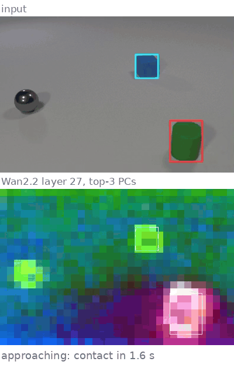
CLEVRER (red: moving object, cyan: the object it hits): the hit object keeps the static-object color until contact, then switches. 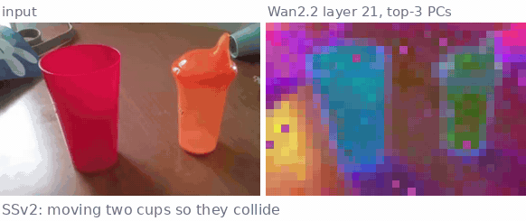
SSv2: the two cups keep separate colors, even in contact. 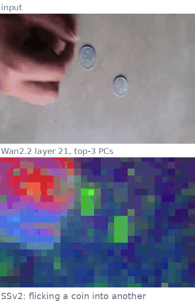
SSv2: across layers and noise levels, the two coins share one color and the hand another; the flicked coin never joins the hand. -
When Less Penetration Means Less Motion: A Study of Contact Supervision in Video Generation
Video generators often move objects through obstacles instead of stopping at contact. We built a controlled contact benchmark with 40K rendered furniture-manipulation demonstrations across eight tasks, using known scene geometry to measure where objects stop and to score penetration, early stopping, and correct contact stops. Fine-tuning Wan, Cosmos, and HunyuanVideo on these demonstrations, and trying longer training, failure-targeted data, and stereo input on Wan, reveals a shortcut: penetration drops as objects stop early, even on clear paths. We then render counterfactual videos of the same scenes that differ only in how far the object travels, and train Wan with DPO and contrastive flow matching to prefer the correct motion over penetration and early stopping, cutting penetration from 50.6% to about 39% and raising correct contact stops by 5.6–6.6 points.
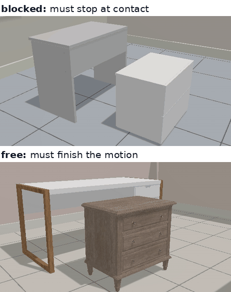
Each scene is blocked (stop at contact) or free (finish the motion). 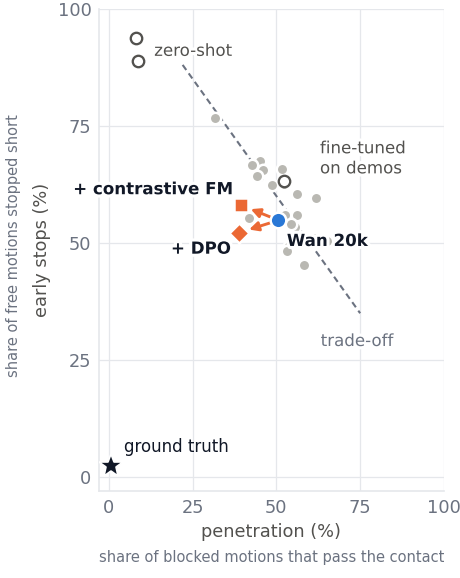
Fine-tuned models trade penetration for early stops; counterfactual supervision moves Wan off this trade-off. 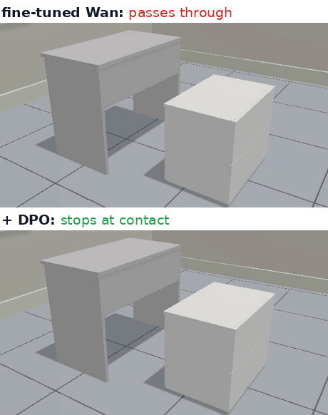
Same blocked test scene: fine-tuned Wan pushes through the table; after DPO it stops at contact. -
Evaluating Spatial World Modeling in Video Generators via 3D Camera Trajectory Generation
This project studies spatial world modeling in video generators through 3D camera trajectory generation. We build an indoor room-tour dataset from InteriorGS 3D Gaussian Splatting scenes, with floor plans, occupancy maps, and camera-trajectory annotations. Using this benchmark, we capture current video model's performance gap between local perception and spatial relationship abstraction.

Rendered Egocentric video in 3DGS. 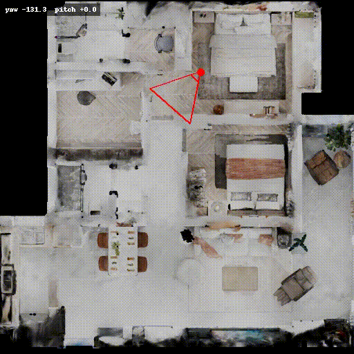
GT and generate target of the video model. 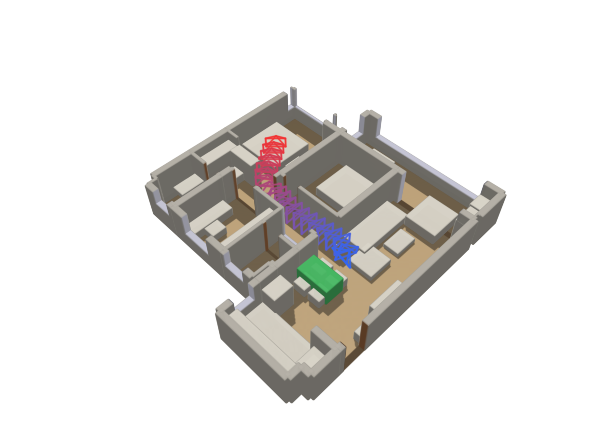
Pose streams generated by world model -
ItinBench: Benchmarking Planning Across Multiple Cognitive Dimensions with Large Language Models
Developed ItinBench, a benchmark for evaluating LLM planning across verbal and spatial reasoning. Built a real-world itinerary dataset from Yelp business data and user reviews, and designed an agent evaluation pipeline with tool use and route optimization metrics to measure reasoning quality and planning efficiency.
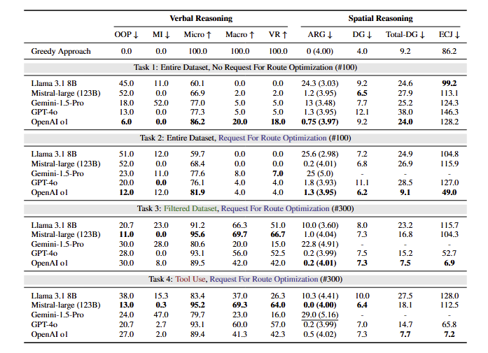
4 level evaluation pipeline. 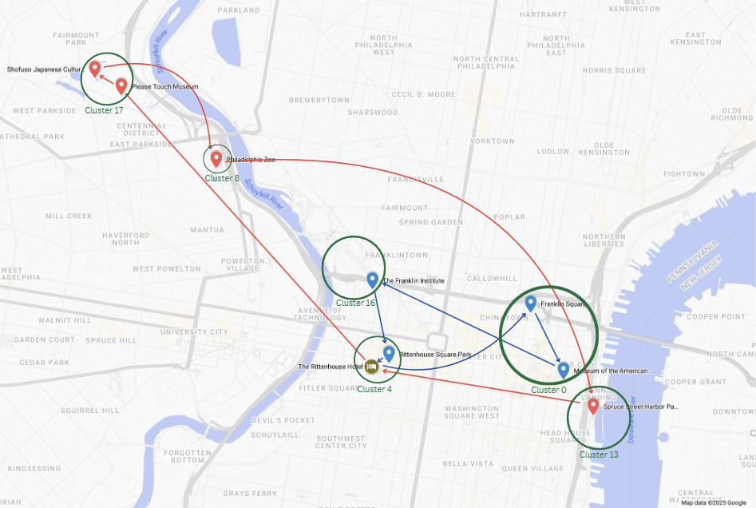
TSP based algorithm is used to evalaute the plan.
Publications
-
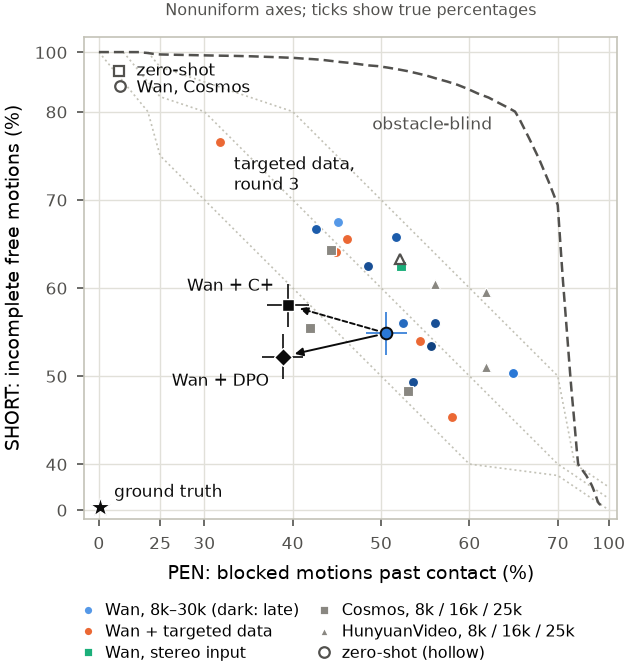
When Less Penetration Means Less Motion: A Study of Contact Supervision in Video GenerationUnder review at CVPR, 2027. -
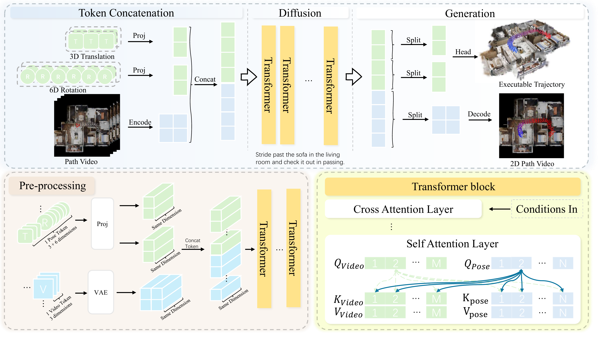
Evaluating Spatial World Modeling in Video Generators via 3D Camera Trajectory GenerationICML Foundations of Deep Generative Models Workshop, 2026. (Oral Presentation) -
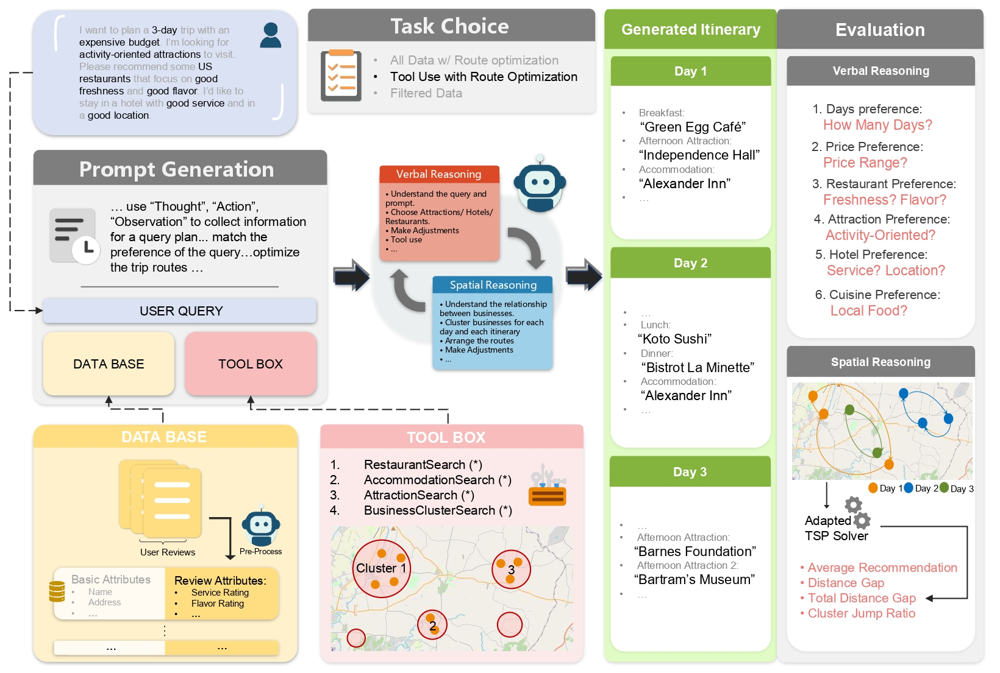
-
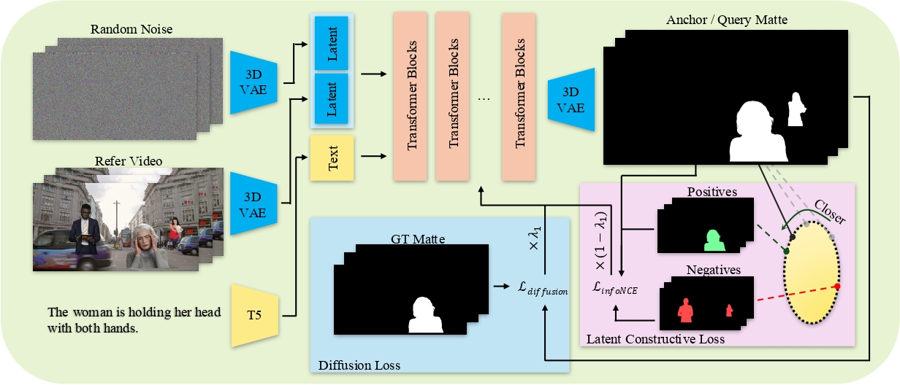
-
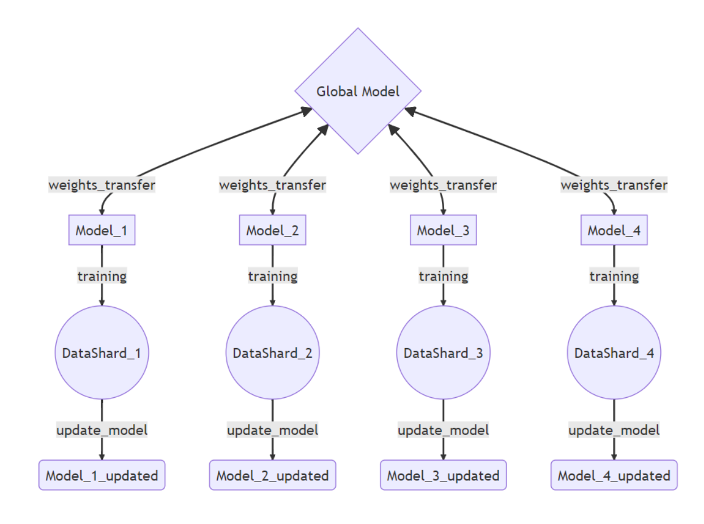
Decentralized Machine Learning Approach on ICU Admission Prediction for Enhanced Patient Care Using COVID-19 DataProceedings of International Mathematical Sciences.
Service
-
Reviewer